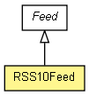

org.apache.wiki.rss
Class RSS10Feed
java.lang.Object
 org.apache.wiki.rss.Feed
org.apache.wiki.rss.RSS10Feed
org.apache.wiki.rss.Feed
org.apache.wiki.rss.RSS10Feed
public class RSS10Feed
- extends Feed

Provides an implementation of an RSS 1.0 feed. In addition, this class is
capable of adding RSS 1.0 Wiki Extensions to the Feed, as defined in
UseMod:ModWiki.
|
Method Summary |
String |
getString()
Returns the XML for the feed contents in a String format. |
| Methods inherited from class org.apache.wiki.rss.Feed |
addEntry, format, getChannelDescription, getChannelLanguage, getChannelTitle, getFeedURL, getMimeType, getSiteName, setChannelDescription, setChannelLanguage, setChannelTitle, setFeedURL, setMode |
| Methods inherited from class java.lang.Object |
clone, equals, finalize, getClass, hashCode, notify, notifyAll, toString, wait, wait, wait |
RSS10Feed
public RSS10Feed(WikiContext context)
- Create an RSS 1.0 feed for a given context.
- Parameters:
context -
getString
public String getString()
- Returns the XML for the feed contents in a String format. All subclasses must implement.
- Specified by:
getString in class Feed
- Returns:
- valid XML, ready to be shoved out.
Copyright © {inceptionYear}-2014 The Apache Software Foundation. All rights reserved.